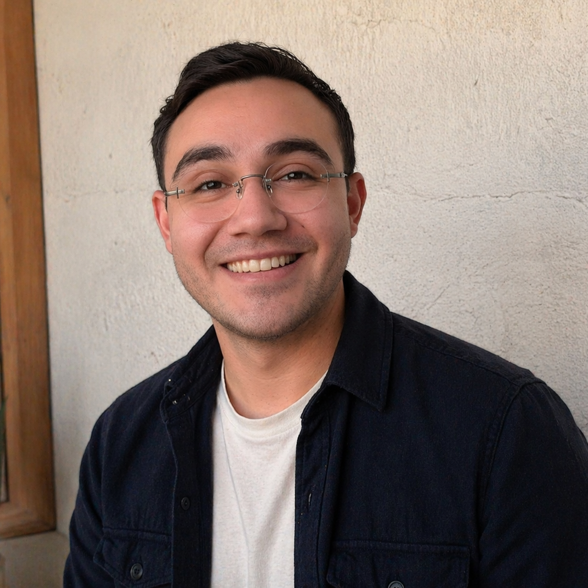

Search Marketing: Google Ads + SEO Médico
Aparece justo cuando el paciente escribe sus síntomas. Campañas por intención, optimización local y estrategia de conversión por procedimiento.
Conocer estrategia →Somos la agencia especializada en marketing para médicos, clínicas y especialistas que entienden que la excelencia clínica también necesita ser encontrada. Estrategias éticas, medibles y diseñadas exclusivamente para el sector salud.
Compatible con lineamientos publicitarios de plataformas de búsqueda y normativas de salud.
La realidad del mercado médico
Ocho de cada diez pacientes investiga en Google antes de decidir. Si tu presencia digital no habla por ti, otro colega con menos experiencia pero mejor visibilidad se queda con esa cita.
No es injusto. Es el nuevo estándar. Y los que lo ignoran pierden terreno cada mes.
Quiero dejar de perder pacientesAtraemos personas que buscan exactamente tu especialidad y están listas para contactarte.
Construimos confianza online con estrategia de reseñas y autoridad de marca médica.
Sabes exactamente cuánto inviertes por paciente nuevo. Cero adivinar qué canal funciona.
Si no apareces en los primeros resultados, esos pacientes ya eligieron a tu competencia.
Quiero aparecer primeroNuestros servicios
Cada canal con el enfoque clínico que una agencia generalista no puede darte.
Aparece justo cuando el paciente escribe sus síntomas. Campañas por intención, optimización local y estrategia de conversión por procedimiento.
Conocer estrategia →Tu sitio es tu segundo consultorio. Rápido, seguro, orientado a convertir y construido con los estándares de privacidad que el sector salud exige.
Evaluar mi sitio →Transforma tus redes en un activo clínico: educación, posicionamiento y captación de pacientes informados y listos para decidir.
Impulsar mi autoridad →Especialidades
Cada disciplina médica tiene sus propias búsquedas, objeciones y ciclos de decisión del paciente. Llevamos años perfeccionando el marketing para cada una.
Cobertura total
Diseñamos una estrategia personalizada para tu consulta, clínica o grupo médico, sin importar tu área de enfoque.
Quiero mi estrategia personalizadaProyectos
Resultados reales para prácticas médicas en distintos mercados y especialidades.

Joshua Ramírez
Especialista en Marketing Digital
Quién está detrás de la estrategia
Llevo más de 10 años desarrollando estrategias de marketing digital para negocios locales e internacionales. Hace varios años decidí enfocarme en un solo sector: salud. Porque cuando el trabajo consiste en conectar a un paciente con el especialista correcto, los resultados importan de verdad.
Me especializo en search marketing — el canal donde el paciente ya levantó la mano y está buscando activamente. SEO local, Google Ads de alta intención y posicionamiento en Google Maps son los instrumentos que uso todos los días para que médicos y clínicas lleguen al paciente correcto en el momento exacto.
Soy el punto de contacto directo de cada cliente y quien lidera personalmente cada estrategia. Cuento con un equipo especializado que ejecuta junto a mí — lo que significa que tienes la atención de alguien con criterio y experiencia, respaldado por la capacidad operativa para entregar resultados consistentes.
Preguntas frecuentes
Respuestas directas. Sin rodeos de agencia.
Diseña, ejecuta y optimiza estrategias digitales para profesionales de la salud con el objetivo de elevar visibilidad, proyectar autoridad clínica y convertir tráfico en citas confirmadas.
Publicidad pagada puede generar consultas desde la primera semana. El SEO médico construye autoridad permanente y suele despegar entre el mes 3 y 6 de trabajo constante.
No. Adaptamos la inversión a tu especialidad. El enfoque no es gastar más, sino asignar bien: procedimientos de alto valor, búsquedas de alta intención, conversión real.
Nuestro equipo conoce las políticas de publicidad médica de Google y Meta, así como lineamientos de COFEPRIS. Revisamos cada pieza antes de publicar. Cero sorpresas.
Desde el blog
Ideas accionables sobre SEO médico, reputación digital y captación de alto valor en salud.
Siguiente paso
Cuanto antes mides, antes corriges. Cuanto antes corriges, antes escalas. La auditoría es gratuita y sin compromiso.